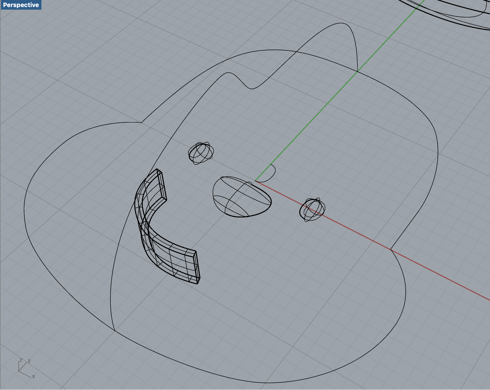
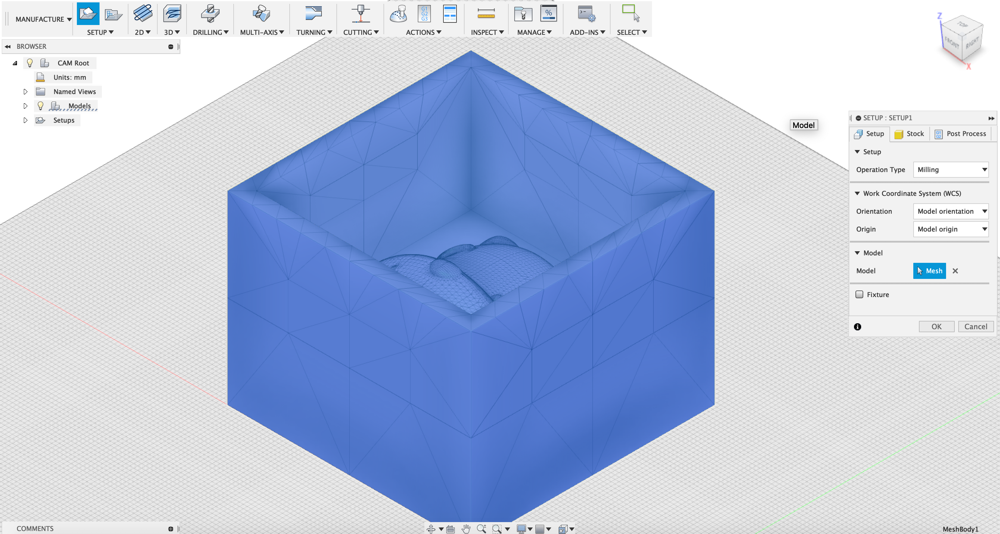
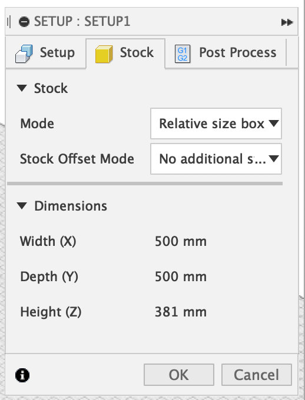
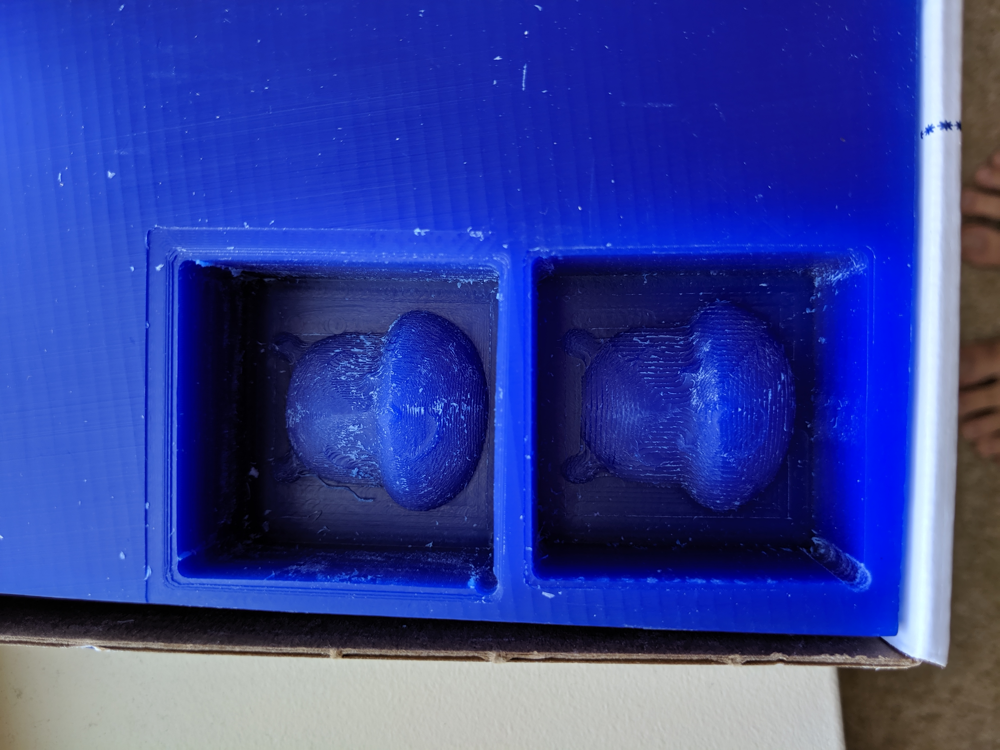
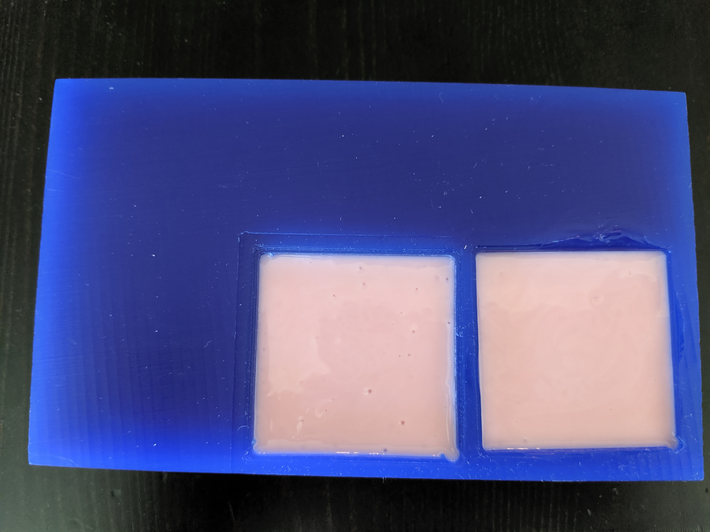
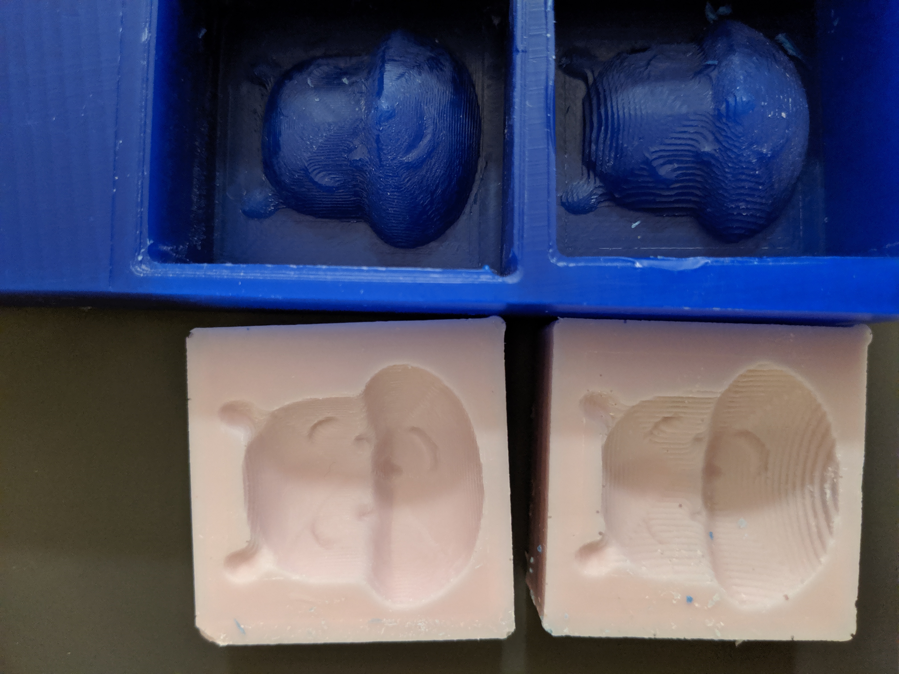
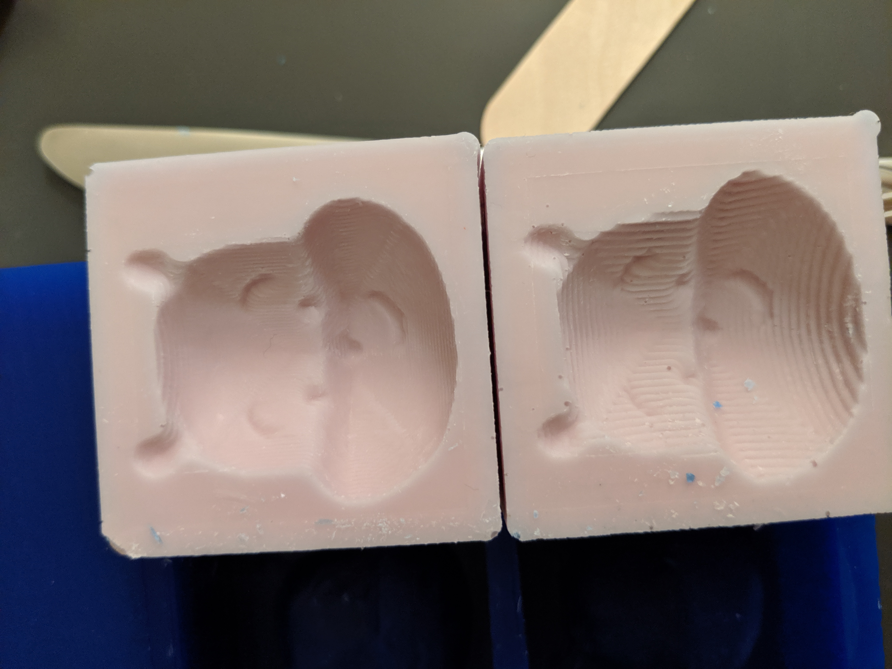
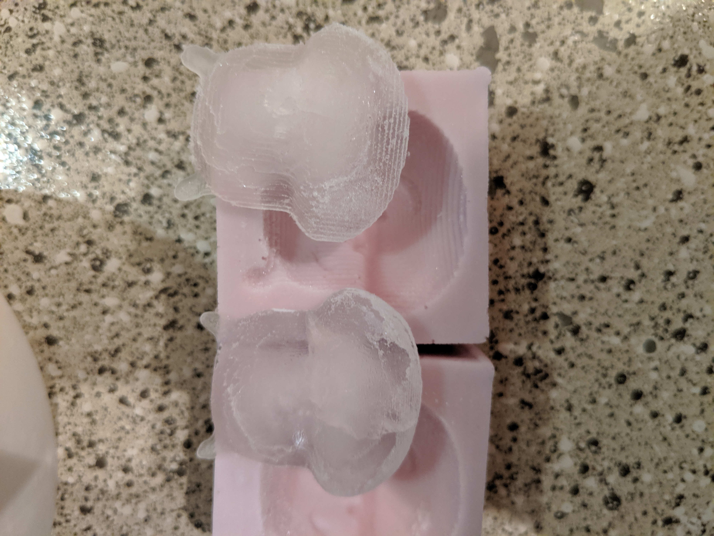
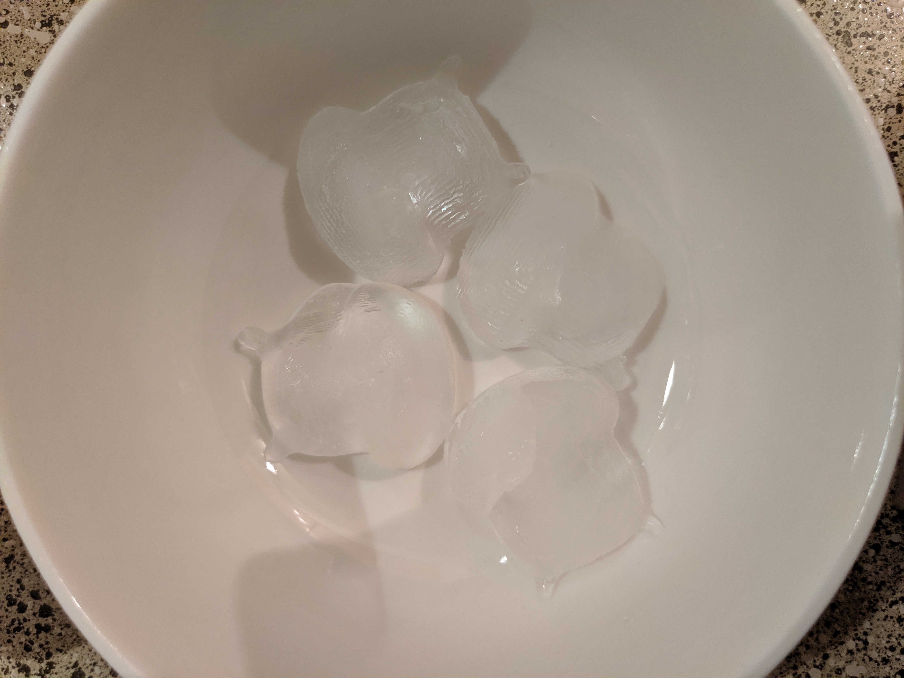

For this project we had to fabricate a mold in silicone then create 4 identical parts. I decided to make a Winnie the Pooh head and drew it in Rhino. I had some problems trying to make an organic 3D shape but I used the same technique as this tutorial to make potatoes. The basic concept was to loft 3 open curves in order to make my shape for the headand other parts. Here are some other commands I used: revolve, insertcontrolpoint (add a point to curve), editpton (to edit curve points).
 Next I exported to stl file and opened that file in fusion360. Per the tutorial from class I placed it at the origin in model mode then switched to manufacture mode to change the setup settings. Above is a picture of my model and the stock settings that I used for the path. I tried to do adaptive clearing and it was taking super duper long. I even left it overnight to and it still wasn't finished. I was kind of panicking but after more inspection I realized my scale was 10x larger than I wanted it to be. I'm not really sure why because I was working in mm in both Rhino and fusion360. After changing the scale adaptive clearing gave me a nice tool path.
To make my molds I decided to mill wax and went to fluke when Nadya was running the shopbot for people. I was lucky enough to be first in line and got my pooh mold done twice. I learned that you need to have more that 1/8" between the part and the box when milling your shape. If you don't do this the mill will either collide or won't be able to cut all the way down. The second time she used a smaller tool stepover to see if the details would come out better. In the picture above the bottom is the larger stepover and the top is a little smoother with a smaller stepover. For the final project I would like to try 3D printing to see if the details come out better.
 I bought food-safe silicone Smooth-Sil 940 which is a 10 to 1 ratio for part A to B. The curing time was 24 hours, but I left it a couple days just to be sure. I had some trouble prying it out of the wax but found success with a butter knife. Silicone is not as fragile as I thought it was. For post curing it said to leave it in the oven at 212 degrees fahrenheit for 4 hours.
Here is a close up of the molds to show the difference between the different stepover settings.
I originally wanted to make chocolate, but I am moving and didn't want to buy extra things so I decided to make ice cubes. Ice cubes are kind of boring, but I will update this after I try chocolate or jello.
Here are the final 4 ice cubes. I am hoping that chocolate will allow the details to show more.